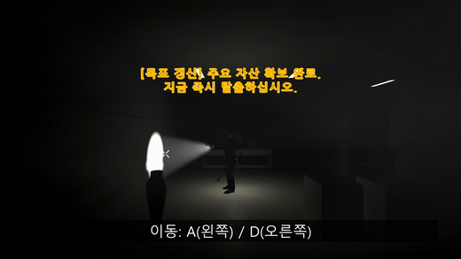

적 행동 구현
- 경비견 횡축 추적·공격·피격
- 천장 매복형 적과 오일 드롭
- 공격·이동 Animator 충돌 수정
2.5D HORROR ESCAPE · TEAM PROJECT
제한된 시야 속에서 서로 다른 적의 위협을 파악하고, 아이템을 선택해 탈출 경로를 개척하는 3D 기반 2.5D 공포 어드벤처입니다.

Enemy AI만 만든 것이 아니라, 각 적의 행동이 레벨에서 실제 압박으로 느껴지고 아이템 선택으로 대응할 수 있도록 스테이지·적·아이템을 함께 구성했습니다.
적의 상태, 공간 배치, 대응 아이템이 하나의 플레이 경험을 만드는 과정을 탭별로 확인할 수 있습니다.
ENEMY STATE
플레이어와의 X축 거리, 공격 Hitbox, 피격·공격 중 여부를 우선순위로 판정해 이동과 공격이 동시에 실행되지 않도록 했습니다.
if (isHitted) return;
if (HandleBusyState()) return;
if (inAttackRange) HandleAttackState(playerPos);
else if (distanceX < traceDist) HandleTraceState(playerPos);
else HandlePatrolOrIdleState();AREA DENIAL
고정된 적이 단순 투사체만 발사하는 대신, 일정 간격으로 오일 방울을 떨어뜨려 바닥에 위험 구역을 남기도록 구성했습니다.
if (Time.time < nextTime) return;
SpawnDrop();
ScheduleNext();
var oil = drop.GetComponent<OilDrop>();
oil.puddlePrefab = puddlePrefab;PLAYER CHOICE
세 종류의 아이템을 모두 들 수 없도록 2슬롯 구조를 만들고, 같은 슬롯을 다시 누르면 총으로 복귀하도록 조작 흐름을 정리했습니다.
if (activeMode == ActiveMode.Item
&& selectedSlot == slotIndex)
{
SwitchToGun();
return;
}
selectedSlot = slotIndex;
activeMode = ActiveMode.Item;LEVEL PRESSURE CURVE
스테이지 1에서 개별 위협을 학습시키고, 2에서 적과 아이템 선택을 조합하며, 3에서 경로와 배치 밀도를 높여 종합적으로 사용하게 했습니다.
공격 애니메이션, 이동, 피격, 환경 오브젝트가 동시에 작동할 때 생긴 충돌을 상태 우선순위와 생명주기로 해결했습니다.
Animator는 공격 중이지만 NavMesh 목적지는 계속 갱신되어 적이 미끄러지듯 접근했습니다.
피격·공격·리코일을 Busy 상태로 묶고, 해당 상태가 끝날 때까지 추적과 순찰을 중단했습니다.
기름 방울과 웅덩이의 생성·소멸 책임이 섞여 불필요한 충돌이나 오브젝트가 남았습니다.
드리퍼는 방울 생성, 방울은 바닥 판정, 웅덩이는 지속·소멸을 담당하도록 생명주기를 분리했습니다.
Git 기록으로 확인한 직접 구현과 수정 범위입니다.